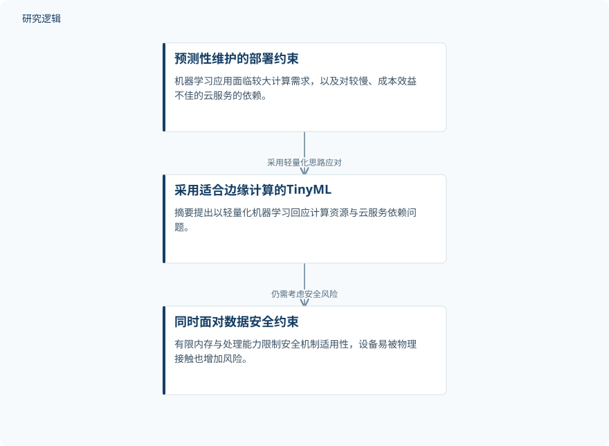

摘要解读
TinyML在工业预测性维护中的应用
Adoption of Tiny Machine Learning for Industrial Predictive Maintenance Solutions
解读更新 2026-11-10 15:17 · 依据公开摘要整理，未核验全文细节
将机器学习用于工业预测性维护，既要面对计算资源与云服务成本，也要考虑设备端的数据安全。本文摘要的阅读价值，在于指出TinyML的轻量化部署优势与安全约束必须同时讨论，而不能把“能够在边缘运行”等同于“已经具备安全可靠的维护能力”。
文章目录
预测性维护为何关注边缘计算
摘要将预测性维护描述为物联网与机器学习相结合的应用：通过预判潜在问题，避免突发、非计划停机，服务于节约时间、人力与成本的维护目标。但机器学习进入实际应用时，较大的计算资源需求，以及对速度较慢、成本效益不佳的云服务的依赖，会构成部署障碍。这里谈的是应用背景与动机，并非本文已量化验证的维护收益。
以TinyML回应计算资源约束
摘要给出的技术思路是采用TinyML，即适合边缘计算的轻量化机器学习形式，以回应预测性维护中的计算与云服务依赖问题。资料没有展开具体算法、模型结构、训练流程或硬件配置，因此目前能够概括的是技术采用思路，而不是可直接复现的方法。也不能据此认定文中实施了某种模型压缩或设备部署方案。
依据摘要整理的TinyML采用思路


概括摘要中预测性维护采用TinyML及其安全约束的关系，不代表论文实验流程或已经验证的部署效果。
下载 SVG图示关系说明
实线表示相邻阶段的信息流，虚线表示跨阶段联系或反馈。
预测性维护的部署约束 → 采用适合边缘计算的TinyML：采用轻量化思路应对；采用适合边缘计算的TinyML → 同时面对数据安全约束：仍需考虑安全风险
轻量化部署仍面临数据安全风险
摘要强调，TinyML并未让部署挑战就此结束。有限的内存与处理能力会限制传统安全机制的适用性；设备较易被物理接触，也会增加安全风险。摘要列举的问题包括数据泄漏、不安全接口暴露、模型权重中敏感信息的泄露，以及侧信道攻击。这些是摘要明确提出的风险判断，不能解读为已经完成攻击测试，或已经测得相应风险的发生概率。
尚不能判断维护收益与安全验证范围
本解读仅依据所提供的完整摘要，未据此声称已阅读全文。摘要没有报告设备类型、数据来源、样本规模、比较基线、预测性能、资源消耗或安全测试结果，因此无法判断TinyML相较其他部署方式的实际收益，也无法确定这些风险在哪些条件下得到验证。“摘要未报告”并不意味着论文没有开展相关工作，而是当前资料不足以支持进一步结论。
阅读启发：把部署能力与安全保障分开核对
阅读启发：后续阅读可围绕两个相互关联的问题展开：TinyML具体缓解了哪些计算与云服务约束，有限资源又如何影响安全机制的选择？还应核对文中是否区分潜在威胁与实际验证的风险。这样的阅读重点直接来自摘要所呈现的矛盾，不预设轻量化必然提高维护效果，也不预设边缘部署必然比云端更安全。
以上为本站阅读启发与建议，不是论文已验证的结论。